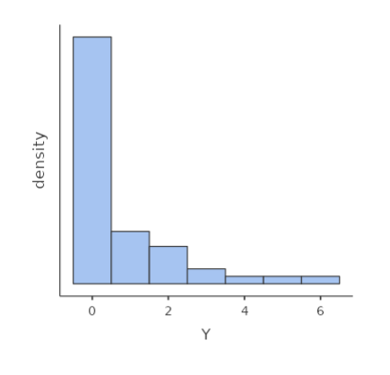
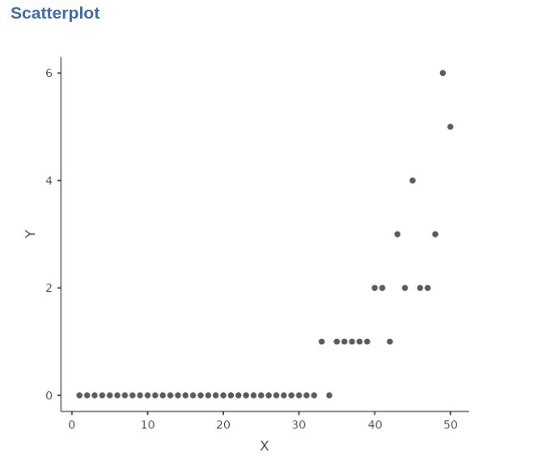

Chapter 2 Link function
Consider a count variable such as the one depicted in the following histogram:

Assuming a positive correlation between the count variable and a continuous variable, when we examine the relationship on a scatterplot, it becomes evident that a straight line is insufficient to capture the pattern accurately. Specifically, when the count variable is zero, the straight line would be horizontal, failing to capture the subsequent increase reflecting the positive relationship between the variables.

A more suitable approach would be to employ an exponential function to accurately describe the relationship between the variables.
This would mean defining the model
\[ \hat{y}_i=e^{(a+bx_i)} \] where \(e^x\) means the exponential of \(x\). However, we prefer to work with linear models, so we linearize the model by taking the logarithm of both size, which gives (recall that \(ln(e^x)=x\)):
\[ ln(\hat{y}_i)=a+bx_i \]
The Poisson model is a generalized linear model in which the predicted values are represented as the logarithm of the counts of the dependent variable, following a Poisson distribution. The regression coefficients in this model indicate the change in the logarithm of the expected counts, and the exponentiated form (\(exp(B)\)) of these coefficients represents the rate of change in the counts as the independent variable increases by one unit
Work in progress: incomplete version